Галерея Торфинна
Визуальная хроника пути воина и творчество поклонников
Официальная галерея
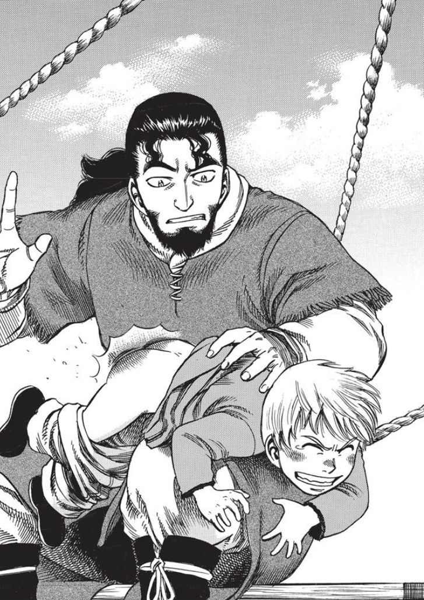
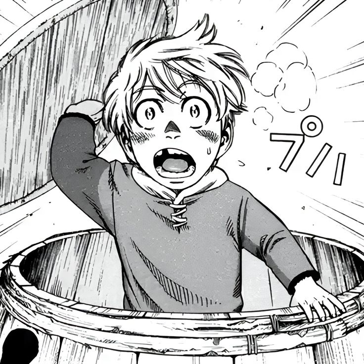
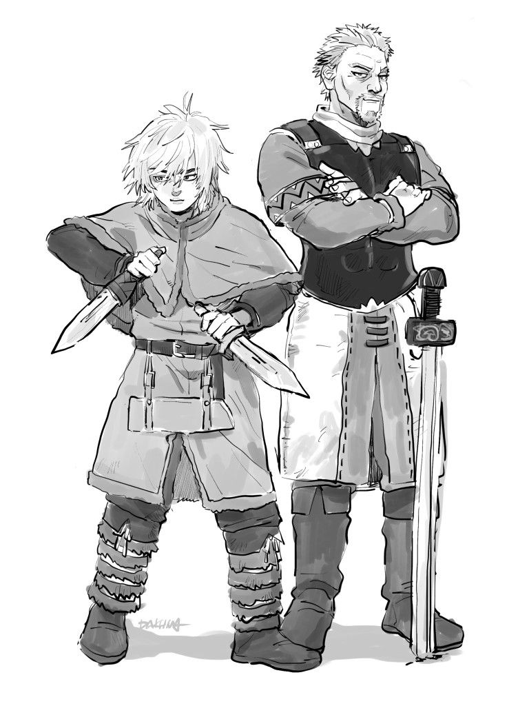

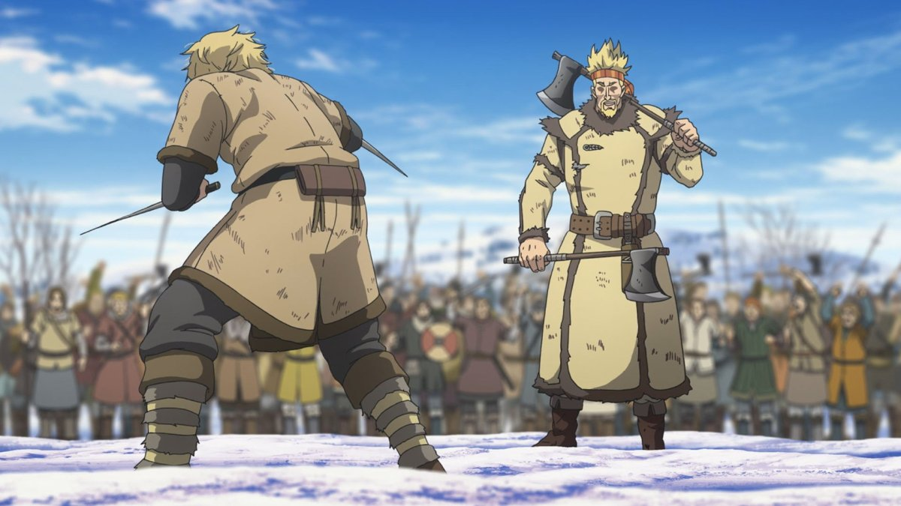
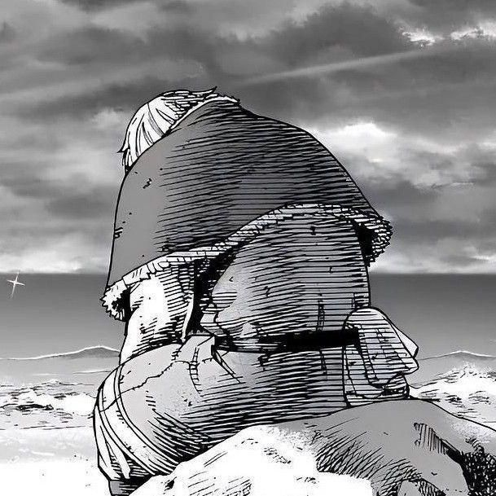
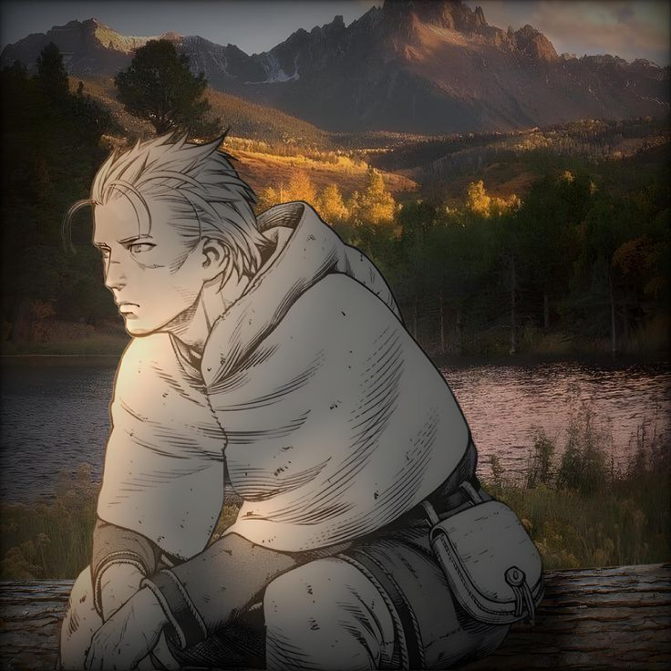
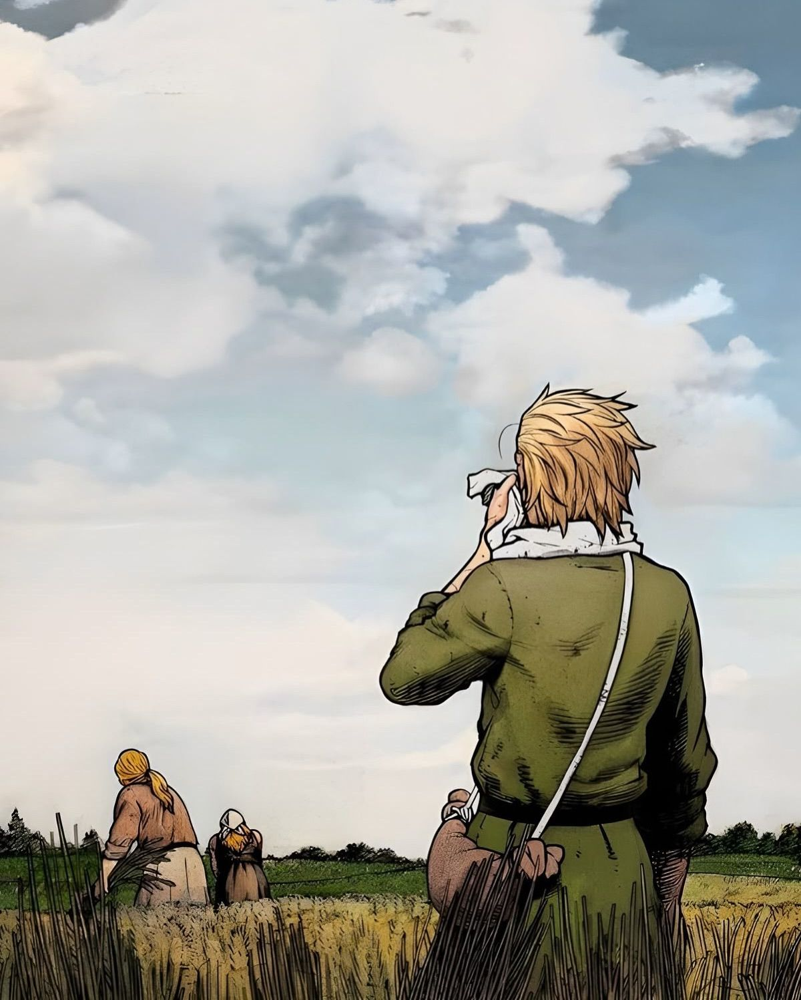
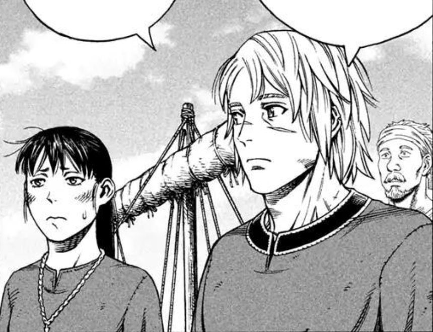
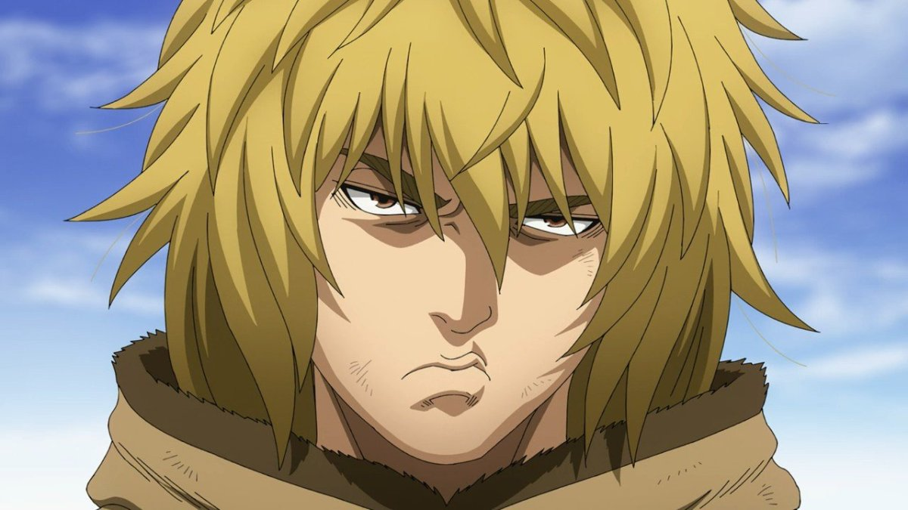
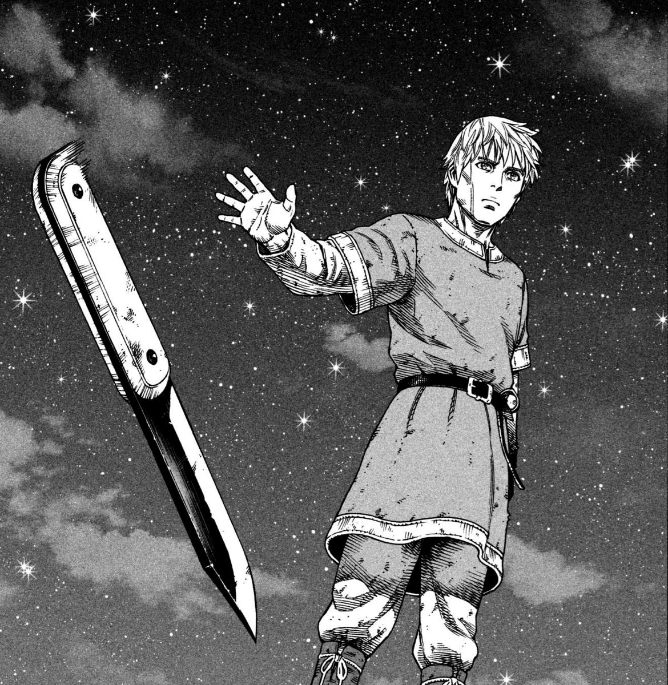

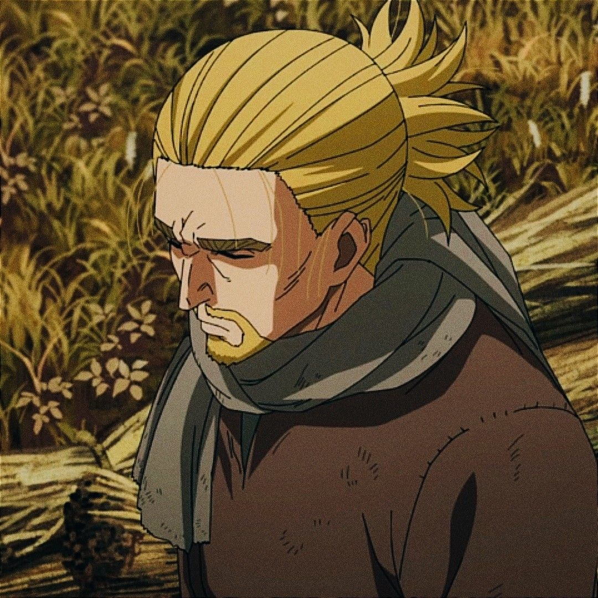
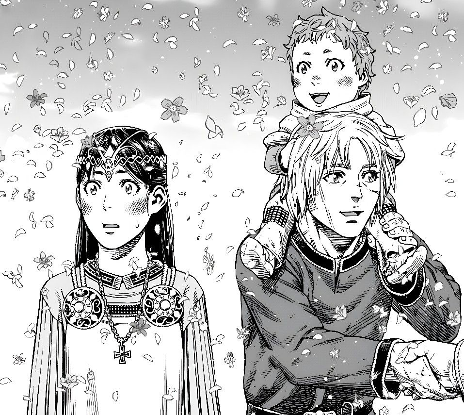
Фан-арты поклонников
Творчество сообщества, вдохновленного историей Торфинна
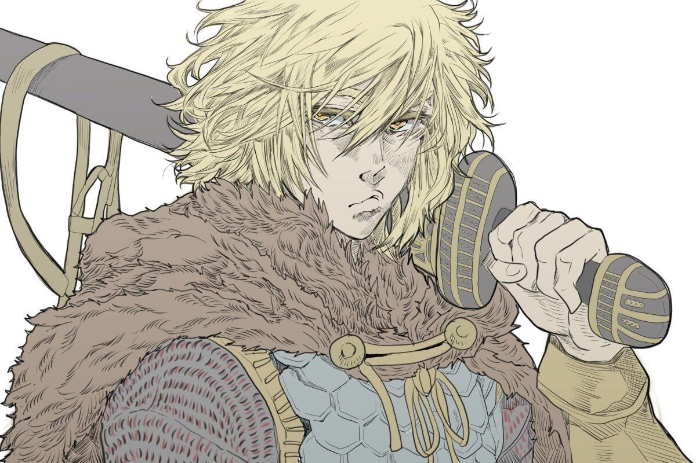
Воин мира
Добавлено: 15.01.2023
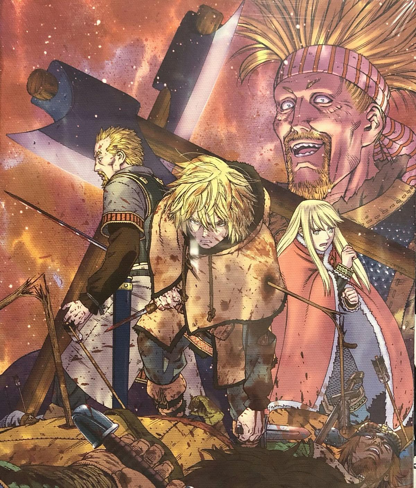
Путь к Винланду
Добавлено: 22.02.2023
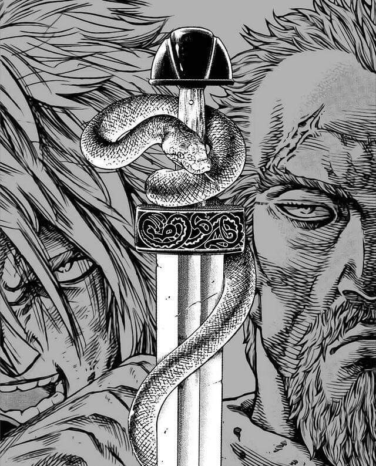
Мечта об идеальном мире
Добавлено: 05.03.2023
Добавьте свой фан-арт
Поделитесь своим творчеством, вдохновленным сагой о Торфинне. После проверки модератором ваша работа появится в галерее.